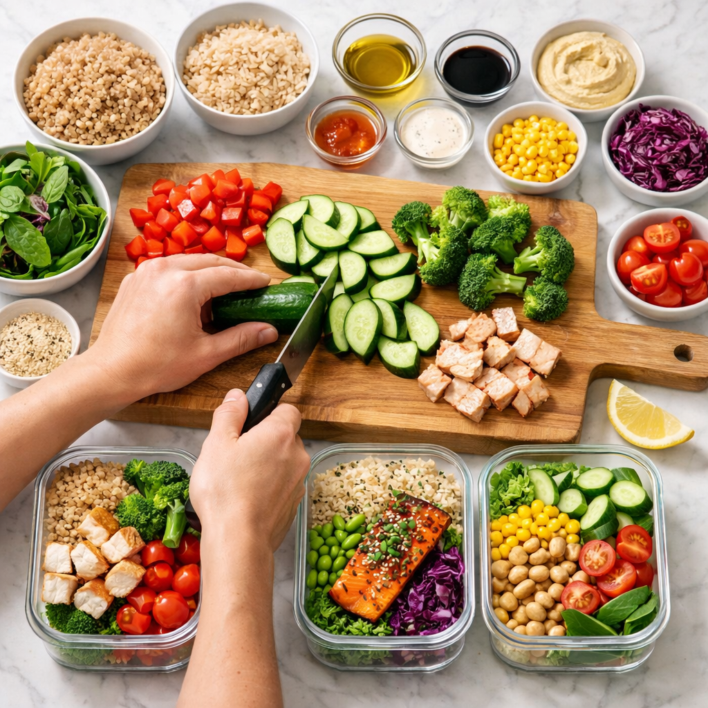

Arrive and set your plan
We start with menu flow, station setup, and a timing strategy that removes guesswork from your week.
How it works
PrepSocial combines practical cooking training with social accountability so healthy eating stays realistic after college.
We start with menu flow, station setup, and a timing strategy that removes guesswork from your week.
You rotate through protein, grain, veggie, and sauce stations with live support from the host.
Use simple templates to portion balanced meals that reheat well and avoid repetitive leftovers.
You leave with prepared meals, a grocery template, and a repeatable system you can run on your own.

Batch-cooking techniques, efficient sequencing, and confidence-building fundamentals for everyday cooking.
Ready-to-eat meals, a grocery template, and prep notes you can use to repeat the process each week.
Young adults and recent grads across Boston who want healthier routines and new local connections.